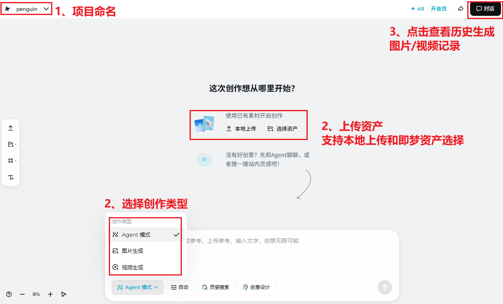
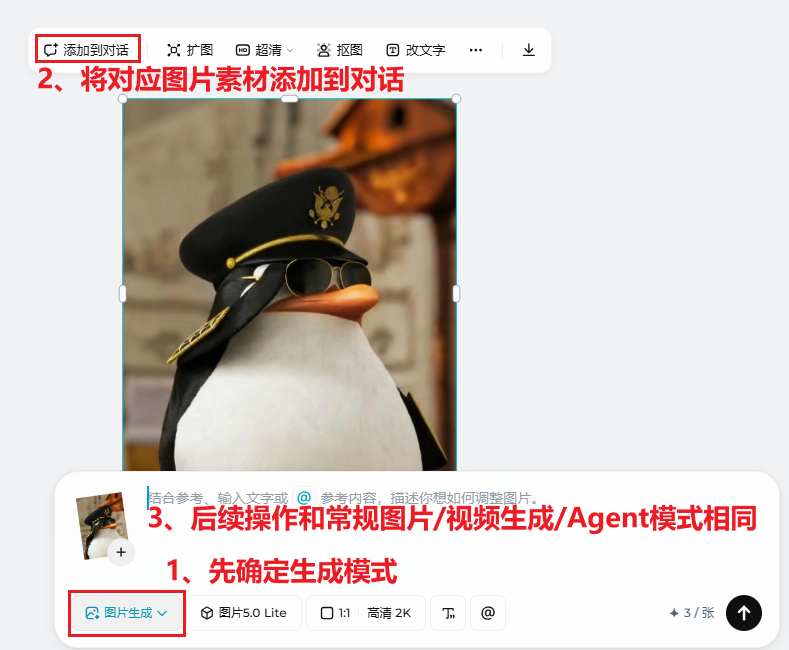
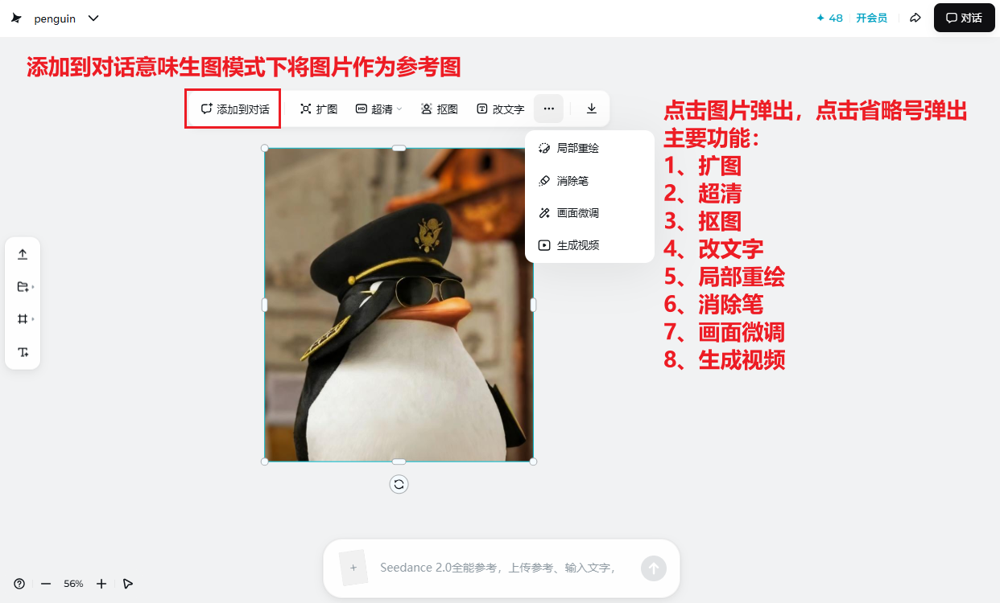
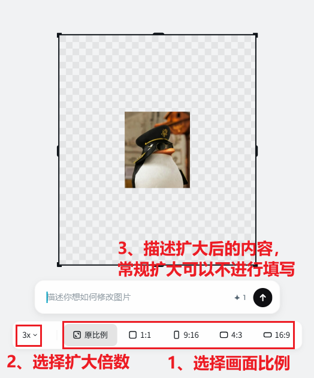
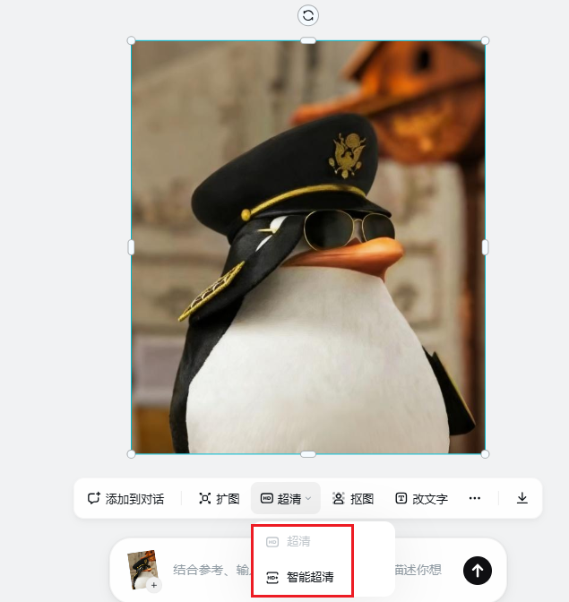
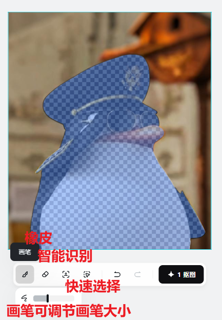
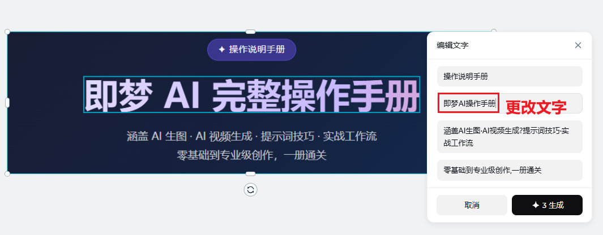
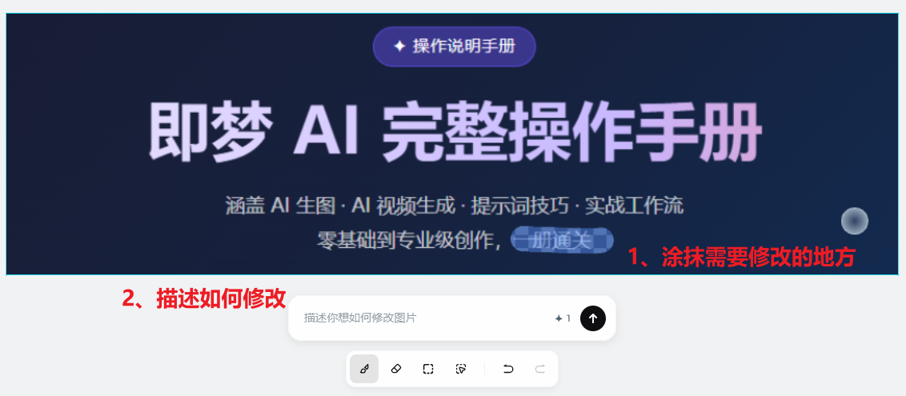
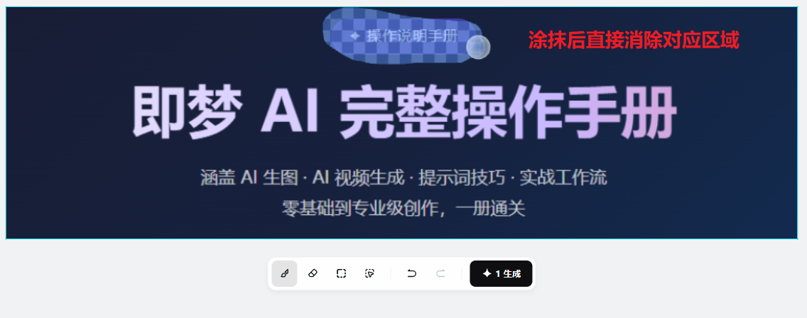
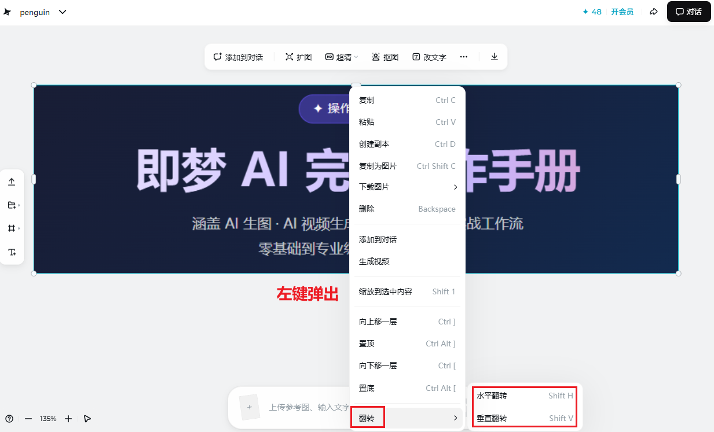

扩图 · 超清 · 抠图 · 消除 · 局部重绘 · 改文字 · 画面翻转 · 图片精修一站式
智能画布是即梦AI提供的图片后期精修工作台，你可以把任何一张图片（包括AI生成的或本地上传的）拖入画布，再通过右侧工具栏对它进行非破坏性的二次加工——不需要懂 Photoshop，用自然语言描述需求，AI 帮你完成。
它更像一个视觉项目的项目制管理中心；对设计工作者来说，则更接近一页 AI native 的精修工作界面。
先用 AI 生图 → 满意构图但细节不够 → 进入智能画布 → 超清放大 + 局部重绘修脸 + 消除背景杂物 + 扩图补边框 → 一张商用级素材完成


将画布中的图片一键发送至 AI 对话窗口，让大模型继续分析、描述或基于图片做二次创作。画布与对话无缝衔接。







除六大核心功能与利用画板内图片进行二次图片或视频生成外，画布还提供镜像反转功能。

水平/垂直镜像翻转，一键输出镜像版本。适合对称构图、左右联屏展示、或修正相机翻转带来的方向问题。
以下步骤适用于大多数画布功能，掌握后其他工具举一反三。
在 AI 生图结果页点击图片右下角的「编辑」按钮，或在顶部导航选择「画布」→「新建画布」后上传本地图片。
在右侧工具栏点击对应功能图标（扩图 / 超清 / 抠图 / 改文字 / 消除 / 局部重绘）。不同工具的操作区域会以不同高亮方式提示。
用鼠标拖拽框选需要修改的区域。局部重绘支持矩形选框与笔刷涂抹两种方式，可以精确到发际线级别。
在底部文本框写清楚你要改成什么。
好的描述 "将头发改为深棕色直发，保留光泽感"
不建议 "让头发更好看"
AI 会同时生成 2–4 个版本供你对比，选择最满意的点击「应用」，不满意就重新生成。每次生成仅消耗少量积分。
一张图可以依次使用多个工具（如先超清、再消除、再局部重绘），全部满意后点击右上角「导出」，支持 JPG / PNG / 原始尺寸输出。
① 画布操作是非破坏性的，每步都可以撤销，大胆尝试
② 先做超清放大再精修，分辨率更高操作更精确
③ 提示词中避免"更好看/更高级"这类抽象词，用具体的形容词替代
④ 积分不够时优先用"消除"和"抠图"，这两个最省积分
① 超清放大提升质感
② 消除背景杂物/阴影
③ 局部重绘修产品细节
④ 扩图补充白底留白
⑤ 抠图输出透明底素材
① 生成一张竖版主图
② 扩图补全横版构图
③ 再次扩图生成方形版
④ 各尺寸分别导出
⑤ 一次创作，全平台复用
① 上传人像图片
② 局部重绘 → 框选服装区域
③ 描述目标服装风格
④ 局部重绘 → 修复脸部细节
⑤ 超清放大 → 最终导出